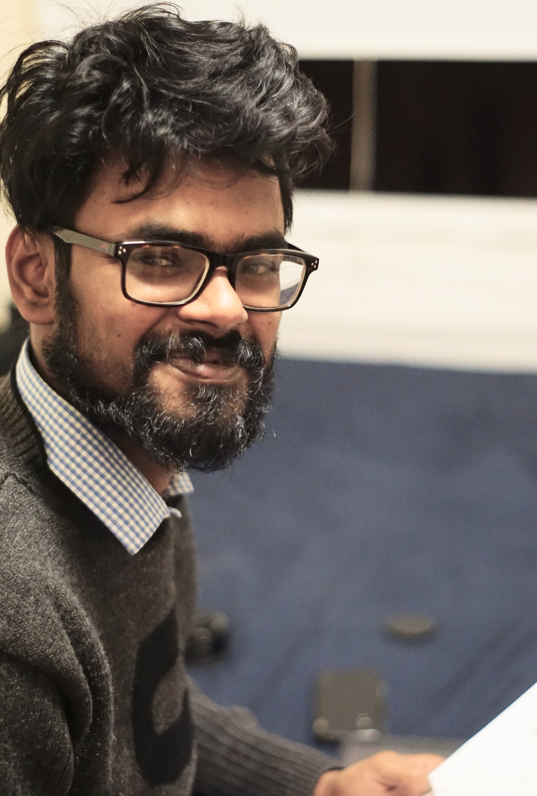

Hi! I am postdoc at Jefferson Lab working on various aspects of quantum computing including both qubit-based and qumodes-based approaches to universal quantum computing. My position is funded by C2QA which is one of the five Quantum Information Science (QIS) Research Centers established by the US Department of Energy (DOE). The goal is to work toward quantum advantage in computations for nuclear physics, chemistry, materials science, and condensed matter physics.

Before this position, I spent three years at Perimeter Institute for Theoretical Physics in Waterloo, Canada where my mentor was Pedro Vieira. I completed my PhD from Syracuse University working with Simon Catterall on various aspects of lattice field theory especially application to understanding the thermodynamics of higher-dimensional black holes in supergravity.
I grew up in different states of India (Darbhanga, Bihar from 1993 until 1999, Delhi from 1999 until 2001, and Sonipat, Haryana from 2001 until 2007) and studied for my Bachelors degree in Physics at
St. Stephen's College, Delhi while being a KVPY Scholar. In 2010, I received a 1-year scholarship from European Union to study for MS at University of Paris (now Sorbonne Universite). I did research on trilayer graphene using ab-initio density functional theory calculations. I then moved back to India and completed another MSc in Astroparticle Physics from Bose Institute and St. Xavier's College (2011-2013) and wrote my MSc thesis on Markov Chain Monte Carlo for path integral approach to QFTs. In my final year of MSc, I was awarded the CSIR/UGC fellowship by Government of India.
In 2013, I joined the Physics department of Syracuse University
and obtained my PhD in 2019. Later that year, I moved to Waterloo, Canada for
my first postdoc and returned to US for my second postdoc in 2022.
Research
My research interests cover several exciting areas of Theoretical Physics.
During the beginning of my PhD, I worked mostly on supersymmetric gauge theories as
non-perturbative formulations of string theory through the gauge/gravity duality.
In this area, I am particularly interested in the study of the finite-temperature
maximally supersymmetric gauge theories using Monte Carlo (MC) methods to check and predict
results about non-extremal black p-branes in the dual supergravity (SUGRA).
This numerical approach provides a tool for potential non-trivial checks
of the AdS/CFT conjecture.
In 2018, I started exploring tensor network renormalization group
methods to study lower-dimensional gauge theories
and spin models with continuous or discrete symmetries.
Since the tensor network methods are computationally expensive in higher dimensions,
one of my other recent interests is also to explore different algorithms
which will enable us to study a wide class of
statistical models with sufficient accuracy.
A long-term goal is to compute critical exponents in 3d
models by going close to the QFT limit and comparing it to the results
from the well-established conformal bootstrap program and MC methods.
Another direction is to study models which are affected by sign problems
in conventional Monte Carlo methods, such as those at finite chemical potential
or with topological term.
During my postdoc at Perimeter, I started exploring alternate methods to
understand matrix models (through bootstrap). I also became part of a small
collaboration trying to understand the scattering in Ising Field Theory (IFT)
using MPS methods. Due to increased interest across the world related to
quantum architectures and its potential applications, in the last several years, I have explored
QISKIT (pronounced kiss-kit), Cirq, and PennyLane to model simple physical
systems on available/near-term quantum devices and applications of quantum
computation (or more formally -- classical/quantum (hybrid) NISQ based algorithms)
to quantum many-body problems. Quantum computation and especially a proper
understanding of digitization of gauge and spin models is one of the problems I am exploring in my
second postdoc. Our goal is mostly focused on the continuous variable (CV) approach to
quantum computing. In this approach, unlike the qubits, the quantum information and
unitary transformations are written in terms of bosonic operators which have infinite-
dimensional Hilbert space (suitably truncated). If you like to read more about quantum computing
including the CV approach, please refer to the my recent review article --
here . Some of the material in this article
is based on lectures given at Rensselaer Polytechnic Institute (RPI) Summer School
in June 2022, Hampton University Graduate Studies (HUGS) program and
Quantum Computing Bootcamp at Jefferson Lab in June 2023.
FOR STUDENTS: Please contact if you would like to know more about my work and want do a research project.
Unfortunately, until I get a permanent position, I won't be able to write reference letters.
If this is acceptable and you are interested, I would be happy to chat and discuss. I have wide collection of projects related to lattice gauge theory, tensor networks, qubits and qumodes approach to quantum computing, computational complexity theory, variational algorithms such as
conventional VQE and d-sparse VQE, Hamiltonian simulation, scrambling in randomly coupled
systems and some others.
Around the World
Sinquerim Beach, Goa, IndiaMirayama Island, JapanAthens, GreeceJaco, Costa RicaSantorini, GreecePorto, PortugalChicago, USADublin, IrelandMaracas Bay, Trinidad and TobagoMaldivesNew York City, USAPrague, Czech RepublicLagos, PortugalBoulder, USAWhiteface Mountains, USA
Notes and Learning Resources
Notes on path integral approach to QM due to Dirac/Feynman (read here, May 2013)
About 100+ advanced Physics e-books available on my GitHub. See README for details. (Click this link)
Talks
(see CV for detailed description and PDFs)
Introduction to tensor networks (29-30 April, 2 May 2024) - University of Pretoria, South Africa
Quantum computing for quantum many-body systems (17 April, 2024) - William & Mary, VA, USA
Approaches to universal quantum computing for spin and gauge models (16 April, 2024) - University of Iowa
Random dense Hamiltonians on current noisy quantum computers (28 March, 2024) - University of Maryland
Extracting some Physics with IBM's 127-qubit quantum processor (13 March, 2024) - Jefferson Lab
Real-time dynamics of SYK model on a noisy quantum computer (05 March, 2024) - Workshop on 'Toward quantum simulation of gauge/gravity duality and
lattice gauge theory', Queen Mary University of London (Online)
(PDF)
SYK model on a noisy quantum computer (06 February, 2024) - Indian Institute of Science (IISc), Bangalore, India
(PDF)
Quantum Computation of the O(3) model using qumodes (02 August, 2023) - Lattice 2023, Fermilab, USA
Computation with Quantum Mechanics (June 20, 2023) - Set of two lectures at Quantum Computation Bootcamp, Jefferson Lab, USA
Can quantum computation improve our understanding of quantum fields? (June 7, 2023) - Set of two lectures at HUGS 2023 Summer School, Jefferson Lab, USA
Non-linear sigma models using quantum computation (May 30, 2023) at C2QA Meeting, New York City, USA
Introduction to Quantum Computing methods in Physics (April 27, 2023) at Tata Institute, Mumbai, India
(Online)
(PDF)
Aspects of Classical and Quantum Computing of Quantum Many-Body Systems (February 10, 2023) at Ashoka University (Online)
(PDF)
Classical computation using tensor networks and quantum computation with qubits and qumodes (November 14, 2022) at Jefferson Lab, USA
Application of tensor methods to real-space renormalization and real-time study of field theories (October 31, 2022) at Brookhaven National Lab, USA (Online)
New tools for old problems in spin and gauge models on the lattice (October 12, 2022) at IIT Hyderabad, India (Online)
Some old problems on the lattice using tensors (August 26, 2022) at NUMSTRINGS 2022 conference at ICTS, India
Introduction to Quantum Computation using QISKIT (June 21 and 22, 2022) at Rensselaer Polytechnic Institute, Troy, USA (Online)
New approach to continuous spin models in two and three dimensions (May 17, 2022) at APTCP, Pohang, South Korea (Online)
Holography with large matrices on the lattice (March 24, 2022) at UNAM, Mexico City, Mexico
Large N matrix models using Monte Carlo and Bootstrap (February 22, 2022) at University of Surrey, UK (Online)
Introduction to tensor networks and spin systems (January 11, 2022) at Azim Premji University, Bengaluru, India (Online)
Tensor networks and spin models (December 7, 2021) - at Indian Institute of Science Education and Research (IISER), Mohali, India (Online)
(PDF)
Real-space tensor renormalization for spin models in three dimensions - November 19, 2021 at Perimeter Institute
Solving matrix models at large and finite N (June 28 and 29, 2021) - Two lectures for Summer School 2021 at Rensselaer Polytechnic Institute, USA (Online due to COVID-19 pandemic)
(PDF)
Holographic gauge theories on the lattice - June 23, 2021 at Dublin Institute for Advanced Studies, Dublin, Ireland (Online via Zoom due to COVID-19 pandemic) (PDF)
Old and new methods for new and old problems in Physics - March 8, 2021 at Indian Institute of Technology (IIT) Madras (Online via Zoom due to COVID-19 pandemic) (PDF)
Probing holographic dualities with lattice supersymmetric Yang-Mills theories - February 25, 2021 at Massachusetts Institute of Technology (Online via Zoom due to COVID-19 pandemic) (PDF) (YouTube)
New tool for old problems — Tensor network approach to spin models and gauge theories - October 14, 2020 at University of Liverpool, UK (Online via Zoom due to COVID-19 pandemic) (PDF)
Tensor Networks: Algorithm & Applications — June 10 and 11, 2020 – Two lectures [1.5 hours each] for CyberTraining Summer School 2020 at Rensselaer Polytechnic Institute, USA (Online due to COVID-19 pandemic) (PDF)
Holographic aspects of supersymmetric gauge theories – October 4, 2019 - Perimeter Institute
Numerical Approaches to Holography — August 28, 2019 - Seminar at Ashoka University, Sonipat, India (PDF)
Numerical Approaches to Holography — August 08, 2019 - Seminar at Indian Institute of Science Education and Research (IISER), Mohali, India
Holography, large $N$, and supersymmetry on the lattice — April 02, 2019 - Ph.D. thesis defense (PDF)
Fundamentals of Quantum Entropy — March 29, 2019
Holographic dualities and tensor renormalization group study of gauge theories — March 11, 2019 - Interdisciplinary Quantum Fields and Strings + Tensor Networks Initiative invited talk at Perimeter Institute (PDF) (PIRSA)
Matrix Models — December 7, 2018 - Theory HEP Group talk at Syracuse University
Lattice gravity and scalar fields — July 23, 2018 at Annual Lattice Conference 2018, Michigan, USA (PDF)
Supersymmetry breaking and gauge/gravity duality on the lattice — April 06, 2018 - Lattice beyond Standard Model 2018 at UC Boulder, Colorado (PDF)
Large $N$ gauge theories — March 09, 2018 - Theory HEP Group talk at Syracuse University
Recent results from lattice supersymmetry in $2 \le d < 4$ dimensions — January 31, 2018 - NUMSTRINGS I conference at ICTS, Bangalore
(PDF) (YouTube)
Testing gauge/gravity duality using lattice simulations — July 22, 2017 at Annual Lattice Conference 2017 , Granada, Spain (PDF)
Testing holography through lattice simulations — April 04, 2017 at Quantum Gravity, String theory, and Holography conference at Yukawa Institute for Theoretical Physics, Kyoto, Japan (PDF)
Maximally supersymmetric Yang-Mills and dual gravitational theories — October 07, 2016 - Theory HEP Group talk at Syracuse University
Supersymmetry on the lattice — April 17, 2016 at the APS 2016 Meeting, Salt Lake City, Utah, USA (PDF)
Lattice studies of $ \mathcal{N} = (8,8)$ SYM - April 08, 2016 — Theory HEP Group talk at Syracuse University
Data Science Stuff
Apart from Physics, I am interested in data science especially supervised and unsupervised machine learning.
A small collection of sample projects I have done are given below.
EDA and Data Visualization
Exploratory Data Analysis (EDA) is the process of retrieving, processing, and 'knowing' the data. It makes full use of a famous DS/ML slogan - Visualize!!
Here, I present few examples from the projects I have done. For example, the first two figures are taken from the analysis of my own flight data (i.e., flight routes taken since 2009). It is obvious that I have spent major part of these 14 years traveling between India and where I did PhD (New York) and postdoc (Toronto). Unfortunately, I have not been to the southern hemisphere but crossed the Date Line several times. In the next figure, we see
about 1200 years of data predicting the day when the cherry will blossom in Kyoto, Japan. This project was inspired by a paper published which
studied the effect of global warming on this annual event. The next figure shows the histogram for the comparison of various statistical measures such -- Accuracy, F1 Score, Precision, Recall (attributes from the confusion matrix) for different algorithms. I mostly use Matplotlib, Plotly, and Seaborn for data visualization. I have carried out these EDA mostly on Jupyter notebooks, Google Colab, or on GCP.
Natural Language Processing (NLP)
NLP is the field of data science/machine learning related to the analysis of texts, speech and drawing meaningful conclusions from it.
In fact, advanced NLP models based on AGI (Artificial General Intelligence) can also suggest texts and answer questions based on
trained models. This is why with Chat-GPT, the interest in LLM (large language models) have considerably increased. Below we see
a snapshot of the project involving the determination of whether a message is spam or not and glimpse of processing of such
written texts.
The packages I have used for NLP problems are the NL tool-kit (NLTK) (it is a leading platform for building Python
programs to work with human language data) and spaCy. In the first figure, we see one step of how we clean the data
through various columns based on removing punctuations, stop words, stemming/lemmatization, and tokenization.
In the second figure, we see a word cloud of the papers written in Quantum Physics during the 1990s obtained from the dataset
from arXiv preprint server, a short project I did to bring out the physicist in me!
Unsupervised and Deep Learning
One of the most popular unsupervised learning algorithms is k-means clustering. The goal of k-means is
to group data points into distinct non-overlapping subgroups. This is very useful for problems like
customer segmentation. In the first figure, we show an example based on k-means algorithm with five clusters
for a problem related to how people (customers) in some mall spend their money. The choice of number of clusters
is crucial since it can lead to overfitting (high variance) for large 'k' and will underfit for small 'k'.
A method for making a good choice is the elbow method.
In the second figure, we show one of the simplest CNN architecture known as 'LeNet' network (deep learning).
It consists of repeating convolution and pooling layers before the fully dense layer and logit output.
This can be used to identify a hand-drawn "8" [as shown] with good accuracy. In the last figure, we
classify the single-channel (no RGB) fashion dataset image with deep learning models in PyTorch.
Publications
Last updated: 2024, March 16. Please check iNSPIRE-HEP for the most up to date publication list. To download list of papers as a single file PDF,
click PDF here
Tensor renormalization group study of 3D principal chiral model (arXiv)
Phase diagram of two-dimensional $SU(N)$ super-Yang--Mills theory with four supercharges (arXiv)